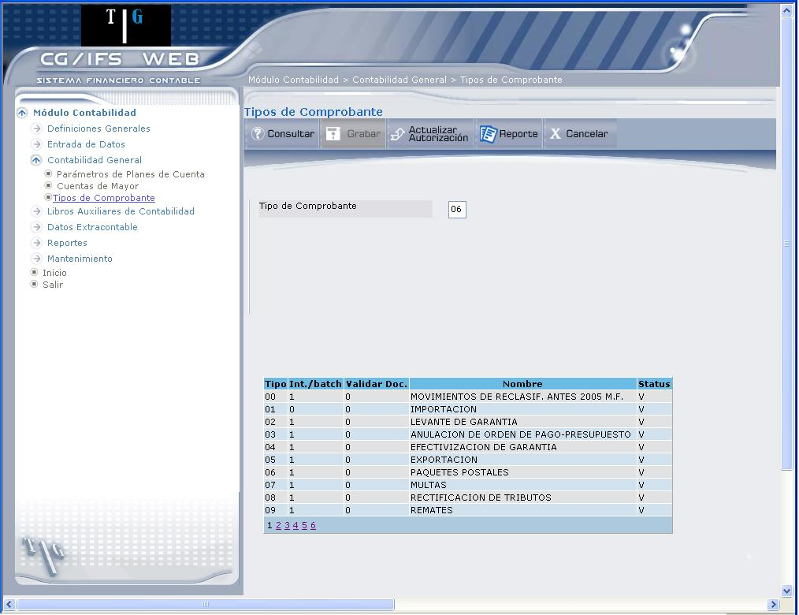
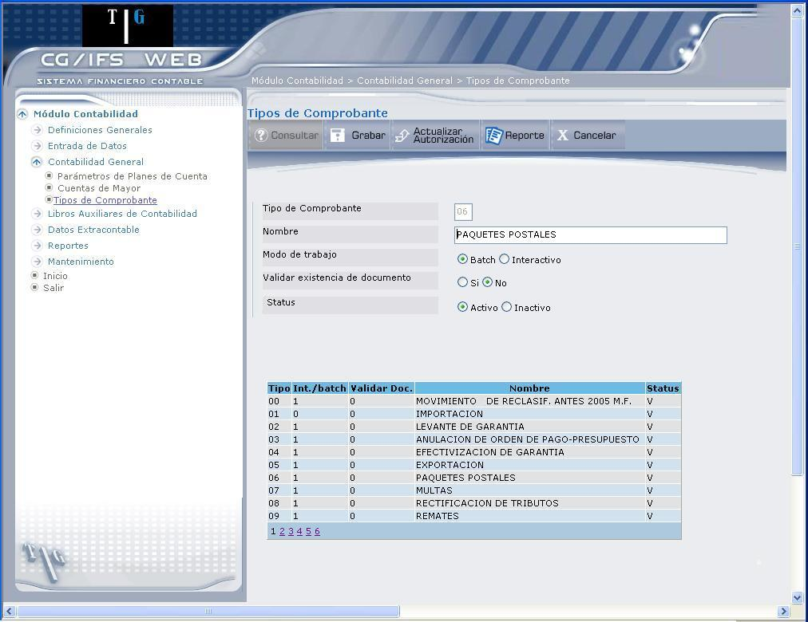
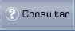
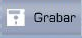
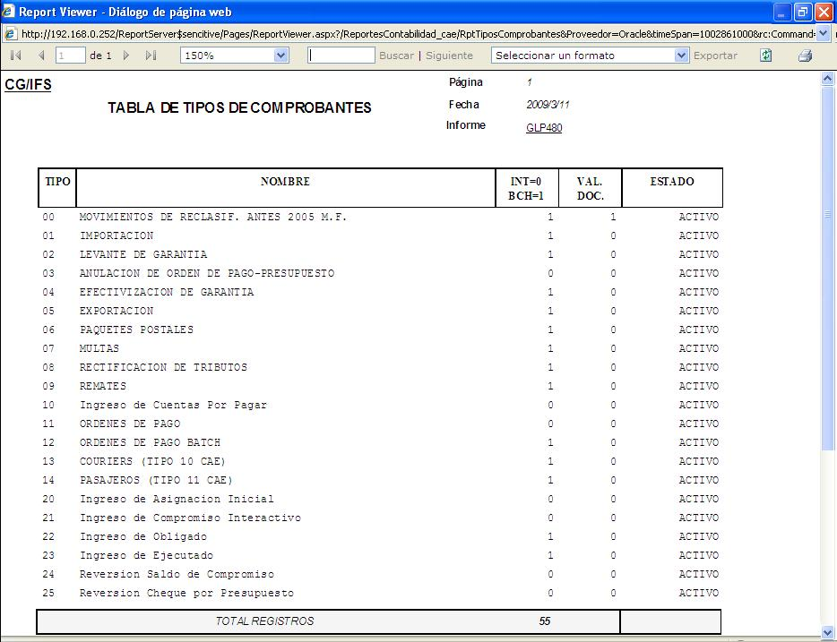

Tablas de Tipos de Comprobante
Esta opción permite crear o modificar el nombre del Tipo de Comprobante así como el tipo de entrada en el que se va a utilizar. El ingreso a esta opción requiere que el usuario esté autorizado a:
- Crear y/o a modificar elementos de la clase de elemento Tipos de Comprobante.
Tomar en cuenta la tabla de Autorización sobre Elementos, definida en CG/Web para la clase de elemento Tipo de Comprobante, que se explica en el manual ´ Convenciones ´, tabla 7.
El elemento Tipo de Comprobante es una facilidad más que CG/Web proporciona al usuario, pudiendo ser su utilización muy variada. Por ejemplo, en las consultas o informes en los que se precise efectuar una selección de Comprobantes, podrá realizarlo seleccionando los tipos que desee.
CG/WEB diferencia entre dos Tipos distintos de Comprobantes, los de tipo '0' para la entrada de Comprobantes de forma interactiva y los de tipo '1' para la entrada en batch. Así, no se puede introducir un Comprobante de forma interactiva si es de tipo '1' y en batch si es de tipo '0'. De este modo puede restringirse el uso de un determinado tipo a algún o algunos usuarios proporcionándoles autorización únicamente a ellos (ver Capítulo de Usuarios y Autorizaciones del Manual del Usuario: 'Convenciones'). La entrada de un Comprobante, tanto batch como interactiva, es rechazada, dando los correspondientes mensajes, si aparece algún movimiento con Tipo de Comprobante inexistente en
Asimismo, al definir un Tipo de Comprobante puede indicarse si en los Comprobantes que se introducen utilizando este tipo debe comprobarse o no la existencia previa del número de documento, en el caso de que de Mayor que se está utilizando en el Comprobante requiera número de documento. De esta forma, si al definir un tipo de Comprobante se anota '0' en el campo correspondiente, en todos los Comprobantes que se introducen sobre este tipo, tanto en entrada interactiva de Comprobantes como en la entrada batch, no se verifica la existencia previa de los documentos para las Cuentas de Mayor que los requieran.
Para actualizar las autorizaciones sobre el Tipo de Comprobante indicado. Se muestra el formato AUTORIZACIÓN SOBRE ELEMENTOS. La tabla de autorizaciones definidas en CG/WEB para la clase de elemento Tipo de Comprobante es la siguiente:
|
GRUPO |
OPER |
NOMBRE |
|
01 |
Mantenimiento de tipos de Comprobante |
|
|
|
10 |
Consulta de parámetros |
|
|
20 |
Modificación de parámetros |
|
02 |
Aprobación |
|
|
|
10 |
Consulta |
|
|
20 |
Entrada |
|
|
30 |
Contabilización |
|
|
40 |
Descontabilización |
Al ingresar a la opción 'Tabla de Tipos de Comprobante', se despliega la pantalla que muestra 1.12.

Figura 1. Tipos de Comprobante.
CREACION Y ACTUALIZACIÓN DE TIPOS DE COMPROBANTES
Para la creación o actualización se explica el ingreso de cada campo.
Tipo de Comprobante:
Digite el código del Tipo de Comprobante que desea consultar, crear o actualizar.
Una vez que digite el código presione la tecla ENTER o el botón Consultar, que despliega los parámetros del Tipo de Comprobante, como muestra la pantalla que presenta 1.13.
Si se trata de un nuevo comprobante, digite el código del Tipo de Comprobante que desea crear y presione Enter o el Botón Consultar. Al tratarse de un comprobante nuevo se despliega en la parte superior el mensaje: “Tipo de Comprobante nuevo” y se procede a ingresar la información como se muestra en 1.13.

Figura 1. Tipos de Comprobante – Crear Tipo de Comprobante.
Nombre:
Permite actualizar el nombre del Tipo de Comprobante. Si se trata de un nuevo registro, al digitar el nombre, se creará el Tipo de Comprobante.
Modo de trabajo:
Despliega el modo de trabajo del tipo de comprobante. En caso de creación de un Tipo de Comprobante, marque una de las siguientes dos opciones, según corresponda:
- Batch: Para que el Tipo de Comprobante se utilice para la entrada batch.
- Interactivo: Para que el Tipo de Comprobante se utilice en la entrada interactiva.
Validar existencia de documento:
Presenta las siguientes opciones, ya sea para el caso de actualización o creación de un nuevo Tipo de Comprobante:
- Marque el casillero 'Si', para que tanto en la entrada interactiva de Comprobantes como en la entrada batch se valide la existencia previa del número de documento anotado, si de Mayor lo requiere.
- Marque el casillero 'No' para no validar la existencia previa del número de documento.
Status:
Permite definir el status del comprobante (Activo o Inactivo)
Después de realizar alguna actualización o la creación de un Tipo de Comprobante, presione el botón Guardar o la tecla ENTER para registrar en el sistema las actualizaciones o el ingreso de un nuevo Tipo de Comprobante.
BOTONES



Figura 1. Reporte – Tabla de Tipos de Comprobantes
Created with the Personal Edition of HelpNDoc: Create help files for the Qt Help Framework